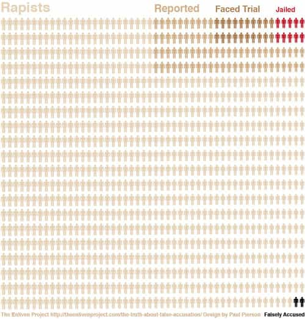

Daryush "Roosh" Valizadeh created ROK in October 2012. You can visit his blog at RooshV.com or follow him on Twitter and Facebook.


Huffington Post politics reporter Laura Bassett, who I had an intimate liaison with eight years ago, shared the following infographic via Twitter the other day:
Rape.24.media.tumblr.com/c5904ef556bb2b…
— Laura Bassett (@LEBassett) January 7, 2013
Here it is:

It was picked up by Dylan Thomas of The Washington Post, who deemed it “the saddest graph you’ll see today.” It was also the most fabricated graph you saw that day.
The above graphic, passed along by the Huffington Post‘s Laura Bassett, was put together by the Enliven Project using data from Department of Justice’s National Crime Victimization Survey and FBI reports. It drives home extremely well the fact that false rape accusations are exceedingly rare, despite what media reports might suggest. Almost as rare are cases when rapists actually go to jail.
The Enliven Project, producer of the graphic, is led by a woman who deems herself a “semi-psychic.” I’m not making this up.
Sarah Pierson Beaulieu is the founder of The Enliven Project. She has had nearly 35 years of experience as a human and over 15 years experience in managing complex relationships and partnerships, fundraising, and systematic approaches to change. She is a survivor and a truth teller, a poet, a semi-psychic, wife, mom, and a loyal friend.
My bullshit radar exploded, but apparently not The Washington Post’s, who passed along the chart without checking if it was accurate. Their action was gently checked by a feminist on Slate, a site that happens to suspiciously be owned by the Post.
The graphic overestimates the number of unreported rapes. It’s hard to measure how many rapes go unreported, because, duh, unreported.
Someone on the internet created another graphic debunking the graphic. Even Reddit, one of the most feminist corners on the internet, lashed against it with dozens of comments.
I’m looking through the data collection, and while the Enliven project fully admits that data collection is “a challenge”, the most appropriate thing they could do is subtext the infographic with a disclaimer. Basically, these numbers are just guesses stretched to their most biased outlier value, and the figure they are downplaying (false accusations) is from wildly biased sources.
In particular, their source for the 2% of reported rapes being false accusations is sourced from an article by “The National Center for the Prosecution of Violence Against Women”, which (while a laudable organization) is hardly an unbiased source on this particular figure…and 2% isn’t even what they said! They said 2%-8%.
The NDAA.org article cited a number of figures, some biased, some not. The number they seemed to have settled around was about 8%, including their most rigorously cited study. So…8% is a better estimate, not 2%, as the infographic assumes.
Further, Enliven’s assumption of the reporting rate comes from a report from the UK (because even the robust NDAA article doesn’t have any figures for how many rapes are actually reported). The UK study includes the following line: “It is currently estimated that between 75 and 95 per cent of rape crimes are never reported to the police.” This report DOES NOT CITE how or where it got the number, and this is the only time this figure shows up in a 175 page document. The reporting rate was entirely guessed at, because it’s almost impossible to gather data on it. So the infographic authors picked a nice round “10%”, a number they have NO justification for.
CONCLUSION: The infographic stretches the numbers, to say the least.
The founder of the Enliven Project, a self-proclaimed “truth-teller,” sees no harm in her bogus graphic. The reason? It created a conversation! Here’s a response to a critical tweet saying her graphic was bogus:
@slate Fantastic response to our infographic, TY. So many challenges w/ rape stats, but all part of the same critical conversation.
— Sarah Beaulieu (@sarahbeaulieu) January 8, 2013
The Washington Post eventually pushed an update to their original post:
So while the phenomena described here are real (and Marcotte argues that, if anything, the chart exaggerates the number of false accusations), be aware that the exact numbers are subject to dispute.
Take a minute to soak that in. One of the biggest news organizations in America is telling you that accurate data is not important, but the “phenomenon,” like perhaps UFO sightings, is bound to have happened. It must be true because they feel it’s really happening! How’s that for irony—using false data to disprove false rape accusations. Nonetheless, Laura Basset, Sarah Beaulieu, and Dylan Thomas will all get pats on the back for adding to the “conversation” of rape with their bogus chart while heterosexual American men will continue to be portrayed as misogynistic rapists. It doesn’t matter that we’re not rapists, but that we are capable of it and therefore contribute to this gross violation of womankind by merely existing.
As for Laura Basset, I’m confident that her hatred of men will propel her far up in the American media machine.
Read Next: You’re A Misogynist
{kind=link}